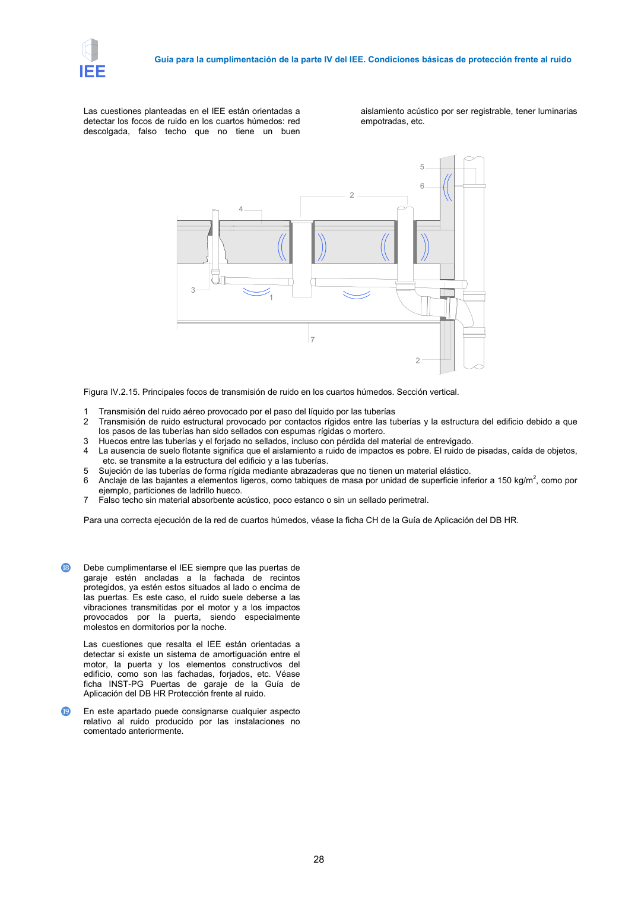

IEE 2016 · edición 2016-11-01 · capa guia
Documento GUIA-PDF-a5d4ef5252ba · SHA-256 del PDF 813669d3066c0ff79457d57b80b0512a4fbb248bc5db1f7baf473c369a064738
Copia fiel del PDF fuente · Fuente oficial
Ficha de la disposición en la fuente oficial
Créditos y autoría en el PDF fuente. Reproducción con cita de fuente y autores.
Permiso literal: Se permite la reproducción del contenido total o parcial de esta Guía siempre y cuando se haga citando la fuente original.
Guía para la cumplimentación de la parte IV del IEE. Condiciones básicas de protección frente al ruido
Dirección y coordinación
Luis Vega Catalán
Mª Cristina Colomo Fernández
Eduardo González de Prado
Dirección General de Arquitectura, Vivienda y Suelo. Ministerio de Fomento
Mª Teresa Carrascal García
Instituto de Ciencias de la Construcción Eduardo Torroja. IETcc- CSIC
Autores
Mª Teresa Carrascal García
Amelia Romero Fernández
Mª Belén Casla Herguedas
Unidad de Calidad en la Construcción del Instituto de Ciencias de la Construcción Eduardo Torroja IETcc- CSIC
Se agradece la colaboración de
Belén Delgado Giménez
Fundación FIDAS
Alberto Esteban González
C.T.O. Estudios y proyectos – Gikesa
Giovanni Muzio
C.T.O. Estudios y proyectos
Francisco Labastida Azemar
Arquitecto, asesor CSCAE
Pedro F. Nogueira López
Universidad de A Coruña
Alejandro Sansegundo Sierra
Acústica SanSegundo
Esta Guía para la cumplimentación de la parte IV del IEE. Condiciones básicas de protección frente al ruido, nace en el marco del
convenio de colaboración llevado a cabo entre el Ministerio de Fomento y el Instituto de Ciencias de la Construcción Eduardo Torroja y
forma parte de la estrategia de este Ministerio de generar una serie de documentos de ayuda que faciliten la aplicación de la normativa
de la edificación y que en este caso concreto, ofrezca a los técnicos criterios para poder realizar una evaluación del estado inicial de las
edificaciones en lo referente a las condiciones acústicas de las viviendas existentes y plantear medidas que incrementen su confort
acústico.
En la redacción de este documento se ha utilizado algunos de los contenidos y de las figuras de la Guía de aplicación del DB HR
Protección frente al ruido. Dicha guía puede consultarse en:
http://www.codigotecnico.org/index.php/menu-documentos-complementarios/menu-guia-aplicacion-db-hr
Se permite la reproducción del contenido total o parcial de esta Guía siempre y cuando se haga citando la fuente original.
2Formatos: JSON del segmento · Markdown
sección, disminuyendo el aislamiento acústico del paramento y permitiendo el paso de ruido por su interior. Guía para la cumplimentación de la parte IV del IEE. Condiciones básicas de protección frente al ruido 28 Las cuestiones planteadas en el IEE están orientadas a detectar los focos de ruido en los cuartos húmedos: red descolgada, falso techo que no tiene un buen aislamiento acústico por ser registrable, tener luminarias empotradas, etc. Figura IV.2.15. Principales focos de transmisión de ruido en los cuartos húmedos. Sección vertical. 1 Transmisión del ruido aéreo provocado por el paso del líquido por las tuberías 2 Transmisión de ruido estructural provocado por contactos rígidos entre las tuberías y la estructura del edificio debido a que los pasos de las tuberías han sido sellados con espumas rígidas o mortero. 3 Huecos entre las tuberías y el forjado no sellados, incluso con pérdida del material de entrevigado. 4 La ausencia de suelo flotante significa que el aislamiento a ruido de impactos es pobre. El ruido de pisadas, caída de objetos, etc. se transmite a la estructura del edificio y a las tuberías. 5 Sujeción de las tuberías de forma rígida mediante abrazaderas que no tienen un material elástico. 6 Anclaje de las bajantes a elementos ligeros, como tabiques de masa por unidad de superficie inferior a 150 kg/m2, como por ejemplo, particiones de ladrillo hueco. 7 Falso techo sin material absorbente acústico, poco estanco o sin un sellado perimetral. Para una correcta ejecución de la red de cuartos húmedos, véase la ficha CH de la Guía de Aplicación del DB HR. ⓲ Debe cumplimentarse el IEE siempre que las puertas de garaje estén ancladas a la fachada de recintos protegidos, ya estén estos situados al lado o encima de las puertas. Es este caso, el ruido suele deberse a las vibraciones transmitidas por el motor y a los impactos provocados por la puerta, siendo especialmente molestos en dormitorios por la noche. Las cuestiones que resalta el IEE están orientadas a detectar si existe un sistema de amortiguación entre el motor, la puerta y los elementos constructivos del edificio, como son las fachadas, forjados, etc. Véase ficha INST-PG Puertas de garaje de la Guía de Aplicación del DB HR Protección frente al ruido. ⓳ En este apartado puede consignarse cualquier aspecto relativo al ruido producido por las instalaciones no comentado anteriormente. Guía para la cumplimentación de la parte IV del IEE. Condiciones básicas de protección frente al ruido 29
